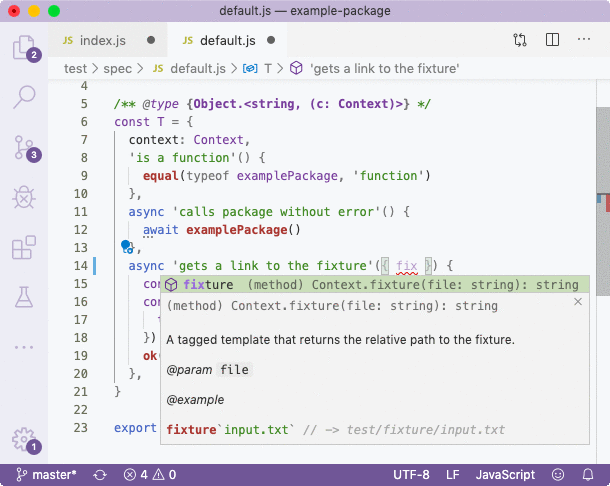
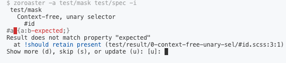

##! Context Testing
A context is a class that can be used across test cases. Its main purpose is to separate testing utilities from test cases: by placing all code that is required to set up tests in a separate files, we can keep test suits clean of the noise, yet access the testing API easily and in the most developer-friendly way.
```js
// test/context/index.js
/**
* A testing context for the package.
*/
export default class Context {
async _init() {
LOG('init context')
}
/**
* Example method.
*/
example() {
return 'OK'
}
/**
* A tagged template that returns the relative path to the fixture.
* @param {string} file
* @example
* fixture`input.txt` // -> test/fixture/input.txt
*/
fixture(file) {
const f = file.raw[0]
return join('test/fixture', f)
}
async _destroy() {
LOG('destroy context')
}
static get BIN() {
return BIN
}
}
```
By providing JSDoc for documentation, the methods can be accessed via destructing in tests. Using context testing, we can always see what variables and functions are available to us from the testing context. It also allows to create as many files with test suites as we need without having to repeat ourselves when writing setting up and tearing down routines in `before`, `beforeEach`, `after` and `afterEach` blocks.

### Snapshots
Tests can simply return a string value which will be recorded in a snapshot in the `test/snapshot` dir. Moreover, a readable stream can also be returned, and _Zoroaster_ will collect all data returned from the stream and then compare it to the snapshot.
```js
import erte from '../../src'
/** @type {TestSuite} */
const T = {
async 'returns a string in colour'({ string }) {
const res = erte(string, 'yellow')
return res
},
}
export default T
/**
* @typedef {import('../context').TestSuite}
*/
```
If exporting a default test suite, we need to create a variable first and annotate it with type information, and export it as default only after, because _VS Code_ will not be able to assign types to default exports. We import the _TestSuite_ type from the context, which already created a nested structure that would allow to annotate test suite objects:
```js
/** @typedef {Object} TestSuite */
/** @typedef {Object} TestSuite0 */
/** @typedef {(c: Context)} Test */
```
If you're using multiple contexts, you'll need to create your own test suite signatures, but the main idea is that a test suite is of type `Object`. This typedef can be defined in the context and then imported in test suites, or test suites files themselves.
### Mask Testing
A mask is a test case template that has fixed logic but whose test input and output data is read from a separate file called mask result file. Therefore, we can set up a test case once, but repeatedly run it for multiple inputs that are mapped against outputs, so that we only have to add new mappings in the result file, without having to repeat the JavaScript logic.
```js
// test/mask/default.js
import makeTestSuite from '@zoroaster/mask'
import Context from '../context'
import examplePackage from '../../src'
export default makeTestSuite('test/result/default', {
/**
* @param {Context} ctx
*/
async getResults({ fixture }) {
const text = fixture`test.txt` + `\n${this.input}`
const res = await examplePackage({
text,
})
return res
},
context: Context,
})
```
We use the `@zoroaster/mask` method to create a test suite which is then exported either as default or named export. _Zoroaster_ context testing framework relies on ÀLamode, when `-a` flag is passed, so that like _Documentary_, it supports modules natively. The second argument to the `makeTestSuite` function is the configuration object, and we need to implement the `getResults` method (possibly asynchronous) that will run the test case and output the result. The result is that automatically compared against the declared one from the test result file. The input is read from the `this.input` variable.
The results are written in a separate file, in whatever most suitable file extension is, that supports syntax highlighting. _Zoroaster_ supports `.js` and `.md` extensions from the box, where `## test name` is used in markdown to indicate new tests, and `// test name` in JS files. The expected output is added in the `/* expected */` block. This can be controlled from the `splitRe` option.
```markdown
## returns the correct output
test
/* expected */
test/fixture/test.txt
test
/**/
/* property */
["additional", "property"]
/**/
/* js-property */
{ hello: 'world' }
/**/
```
Contexts are also available to be used in masks. Access to the API is made possible via the arguments to the `getResults` function, and any number of contexts can be passed. The `makeTestSuite` method is quite robust and supports many options, such as:
- ``getTransform``: allows to return a _Transform_ stream to be ended with the input specified in the mask's result.
- ``getReadable``: allows to return a _Readable_ stream constructed with the input from the mask.
- ``fork``: configuration for fork testing (see below).
- ``mapActual``: is the `getResults` returned a an object instead of a string, call this method to map which property of the object should be compared to the expected output.
- ``assertResults``: additional assertions on results.
- ``jsonProps``: properties that should be JSON-parsed (like above, `/* property */` denotes a property which is exported in `this.property` property of the mask).
- ``js``: properties that should be JS-parsed.
- ``splitRe``: regular expression to split the result files by. The default is `/^\/\/ /gm` for results from all files, and `/^## /gm` for results from `.md` files.
- ``propStartRe``: how to detect start of a property, e.g., in `/⁎ propName ⁎/`, the default `/⁎` is used.
- ``propEndRe``: how to detect end of a property, e.g, in `/⁎ propName ⁎/ some prop value /⁎⁎/`, the default `/⁎⁎/` is used.
### Fork Testing
_NodeTools_ appreciates that powerful CLI applications can be written in Node.JS, however testing them has always been a chore. This is why _Zoroaster_ is a powerful framework that provides a way to test forks automatically using mask testing. You can specify arguments to the program as inputs, and provide `/* stdout */`, `/* stderr */` and `/* code */` properties of the mask result file (each one is optional but at least one is required). The fork will be spawned and outputs compared to the ones supplied in the mask result.
```markdown
## runs the binary
test/fixture/test.txt
/* stdout */
my-new-package called with a test file
a test file
/**/
/* stderr */
File test/fixture/test.txt successfully processed.
/**/
```
You can do a lot of cool things like passing inputs to *stdin* by specifying the `inputs` property:
```markdown
## can register a domain
com
/* inputs */
Apply coupon: n
OK: y
/**/
/* stdout */
Apply coupon TLDEALZ01 (y/n)? [y] n
Price 8.88
Additional Cost 0.18
----- --------
Total 9.06 USD
Registering DOMAIN using:
┌─────────────────────────────────────┐
│ John Zoidberg, zoidberg@futurama.bz │
│ Planet Express │
│ 57th Street │
│ New New York │
│ 10019, US │
└─────────────────────────────────────┘
OK (y/n)? [n] y
Successfully registered DOMAIN! Charged amount: $9.06.
/**/
```
[More examples](https://github.com/artdecocode/expensive/blob/master/test/mask) from _Expensive_.
The fork property of the mask constructor can accept a single path to the fork, or additional advanced options known as [_ForkConfig_](https://github.com/contexttesting/fork#type-forkconfig) that allow to specify CWD, enable logging and others.
Of course, contexts can be used for fork-testing too. This is useful, for example, when a CLI program needs to interact with an external web service, so that we can mock an HTTP server that serves responses. The example below will start a server using a context, and pass the url as the first argument to the CLI.
```js
// mask
import clearr from 'clearr'
export default makeTestSuite('test/result/bin', {
context: Context,
fork: {
module: Context.BIN,
/**
* @param {string[]}
* @param {Context} context
*/
async getArgs(args, { start }) {
const url = await start({
get: (ctx) => {
// assign response from the response
// property of the mask result.
ctx.body = this.response
},
})
return [url, ...args]
},
// use clearr package to remove
// loading indicator w/ \r
preprocess: clearr,
},
jsonProps: ['response'],
})
```
Or, we might want to make use of `temp-context` to ensure that data is written or read from a file by the CLI. [The example](https://github.com/artdecocode/typal/blob/f406f025b5025389e38e7ba2263e6e13d6acef7b/test/mask/bin.js#L5) below will write data from the mask result into a file using the `write` method of a temp context, and pass it as the first argument to the CLI whose job it is then to process this file in-place (the CLI updates the passed file). The spec in `getResults` is used to create a snapshot of the updated file using the context. The snapshot is returned for assertion on the `/* expected */` property. In other words, we add some JS in the mask result, write it to a temp file, use CLI to update this temp file, then return the snapshot of the temp folder that includes the temp file, and compare it to the expected value. By specifying the context as param to functions, we receive full _JSDoc_ support.
```js
const TS = makeTestSuite('test/result/bin/default', {
context: TempContext,
fork: {
module: Context.BIN,
/**
* @param {string[]} args
* @param {TempContext} t
*/
async getArgs(args, { write }) {
const p = await write('program.js', this.program)
return [p, ...args]
},
},
/**
* @param {TempContext} t
*/
async getResults({ snapshot }) {
return snapshot()
},
})
```
[More examples](https://github.com/artdecocode/logarithm/blob/master/test/mask) from _Logarithm_.
### Persistent Contexts
In case when a certain long-running process (e.g., a connection to the database) needs to be initialised once per test suite, it's possible to assign it as a persistent context, rather than a one-use context.
```js
export const testSuite = {
persistentContext: class {
async _init() {
// initialised once per test suite
// ...
this.client = await client.connect('mongodb://localhost:27017')
}
async _destroy() {
await this.client.close()
}
},
context: [class {
_init() {
// initialised for each test
// ...
}
async startServer(mongo) {
return await start({ mongo })
}
}],
'test case'({ client }, { startServer }) {
const server = await startServer(client)
const res = await get(server.url)
equal(res.status, 200)
},
}
```
Any number of contexts and persistent contexts can be passed, in an array, but persistent contexts will always be passed as arguments first. Read more about contexts on [_Zoroaster_](https://github.com/artdecocode/zoroaster) documentation.
### Interactive
Whether for masks or snapshot testing, when _Zoroaster_ is run in the interactive mode with the `-i` flag, if the output was not what was expected, the testing framework will suggest that it should be updated (or new one recorded it there wasn't one before). This allows to quickly add expected outputs to masks.

### Environments
You might have noticed that there are additional test scripts: `test-build` and `test-compile` which set the ``ALAMODE_ENV`` variable. This variable controls the renaming of imports via the `.alamoderc` file. It allows to run all test suites against compiled and build code, to make sure that not only source code is tested, but its derivatives prepared for publishing. When using _Closure Compiler_, it's pretty essential to run tests against the compiled version, because of the complexity of advanced compilation (e.g., it's possible we forgot to add a property to externs which then gets renamed so that the library does not work as expected).
```json
{
"env": {
"test-build": {
"import": {
"replacement": {
"from": "^((../)+)src",
"to": "$1build"
}
}
},
"test-compile": {
"import": {
"replacement": {
"from": "^((../)+)src$",
"to": "$1compile"
}
}
}
}
}
```
The renaming is done using simple regexes. When testing compiled folder, we can only test those files exported from the main `src` file, i.e. from `../src` but not `../src/lib` because there's only one compiled file produced. Therefore the renaming is only possible with `src$` regex that will rename imports exactly from `src`. With the *build* environment this is not the case and we can unit test everything.
When we test forks, the renaming doesn't work since we're hard-coding the location of the executable fork file, rather than importing it. Therefore, we need to manually control this path, which is done in Context:
```js
class Context {
static get BIN() {
return BIN
}
}
let BIN = 'src/BIN'
if (process.env.ALAMODE_ENV == 'test-build') {
console.log('Testing build bin...')
BIN = 'build/bin/mnp'
} else if (process.env.ALAMODE_ENV == 'test-compile') {
console.log('Testing compile bin...')
BIN = 'compile/bin/mnp'
}
```
By adding a single logging line with the information about the location of the fork, we can make sure that our set up is correct.